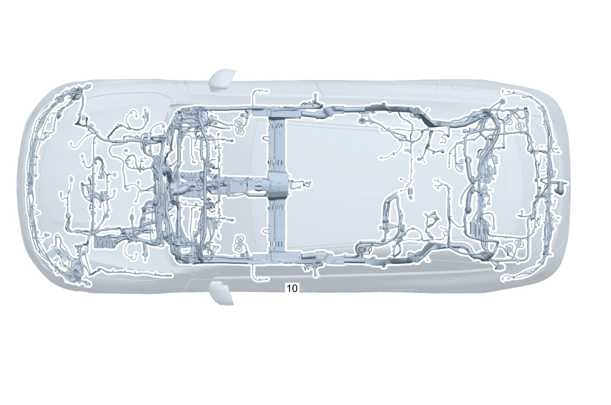

| № | Артикул | Название | Кол. | Примечание | Ограничение |
|---|---|---|---|---|---|
| 10 | A 174 540 97 32 | Электрический жгут (ELEKTRISCHER LEITUNGSSATZ) | 1 | Основной жгут электропроводки системы рамы и пола; DUMMY HARNESS C05 [-] В жгуте проводов предусмотрена возможность подключения соответствующих дополнительных опций согласно производственному номеру а/м [-] При заказе указать идент. номер | |
| 20 | A 174 540 41 44 | - Электрический жгут (ELEKTRISCHER LEITUNGSSATZ) | 1 | Тягово\-сцепное устройство Рулевое управление: Влево | 550 |
| 20 | A 174 540 40 44 | - Электрический жгут | 1 | Тягово\-сцепное устройство Рулевое управление: Вправо | 550 |
| 20 | A 174 540 55 46 | - Электрический жгут (ELEKTRISCHER LEITUNGSSATZ) | 1 | Тягово\-сцепное устройство Рулевое управление: Влево | 550+807 |
| 20 | A 174 540 55 46 | - Электрический жгут (ELEKTRISCHER LEITUNGSSATZ) | 1 | Тягово\-сцепное устройство Рулевое управление: Влево | 550 |
| 20 | A 174 540 57 46 | - Электрический жгут | 1 | Тягово\-сцепное устройство Рулевое управление: Вправо | 550+807 |
| 20 | A 174 540 57 46 | - Электрический жгут | 1 | Тягово\-сцепное устройство Рулевое управление: Вправо | 550 |
| 20 | A 174 540 66 51 | - Электрический жгут (ELEKTRISCHER LEITUNGSSATZ) | 1 | Тягово\-сцепное устройство Рулевое управление: Влево | 550+(807+057) |
| 20 | A 174 540 66 51 | - Электрический жгут (ELEKTRISCHER LEITUNGSSATZ) | 1 | Тягово\-сцепное устройство Рулевое управление: Влево | 550 |
| 20 | A 174 540 68 51 | - Электрический жгут | 1 | Тягово\-сцепное устройство Рулевое управление: Вправо | 550+(807+057) |
| 20 | A 174 540 68 51 | - Электрический жгут | 1 | Тягово\-сцепное устройство Рулевое управление: Вправо | 550 |
| 25 | A 174 540 40 33 | - Электрический жгут (ELEKTRISCHER LEITUNGSSATZ) | 1 | Модуль обработки сигналов и управления Рулевое управление: Влево | |
| 25 | Q 000000000002 | - Возможен заказ только отдельных компонентов жгута проводов | 1 | Модуль обработки сигналов и управления Рулевое управление: Вправо | |
| 40 | A 174 540 96 21 | - Электрический жгут (ELEKTRISCHER LEITUNGSSATZ) | 1 | Adapter Electric Drivetrain | |
| 45 | A 174 540 31 36 | - Электрический жгут (ELEKTRISCHER LEITUNGSSATZ) | 1 | Камера заднего вида / камера с обзором 360° Рулевое управление: Влево | 4B1 |
| 45 | A 174 540 32 36 | - Электрический жгут (ELEKTRISCHER LEITUNGSSATZ) | 1 | Камера заднего вида / камера с обзором 360° Рулевое управление: Вправо | 4B1 |
| 45 | Q 000000000002 | - Возможен заказ только отдельных компонентов жгута проводов | 1 | Камера заднего вида / камера с обзором 360° Рулевое управление: Влево | 4B1+(807+057/808/29X) |
| 45 | Q 000000000002 | - Возможен заказ только отдельных компонентов жгута проводов | 1 | Камера заднего вида / камера с обзором 360° Рулевое управление: Влево | 4B1 |
| 45 | Q 000000000002 | - Возможен заказ только отдельных компонентов жгута проводов | 1 | Камера заднего вида / камера с обзором 360° Рулевое управление: Вправо | 4B1+(807+057/808/29X) |
| 45 | Q 000000000002 | - Возможен заказ только отдельных компонентов жгута проводов | 1 | Камера заднего вида / камера с обзором 360° Рулевое управление: Вправо | 4B1 |
| 50 | A 174 540 30 44 | - Электрический жгут (ELEKTRISCHER LEITUNGSSATZ) | 1 | Жгут электропроводки фар Рулевое управление: Влево | |
| 50 | A 174 540 31 44 | - Электрический жгут (ELEKTRISCHER LEITUNGSSATZ) | 1 | Жгут электропроводки фар Рулевое управление: Вправо | |
| 60 | A 174 540 35 36 | - Электрический жгут | 1 | Пакет функций освещения Рулевое управление: Влево | |
| 60 | A 174 540 36 36 | - Электрический жгут | 1 | Пакет функций освещения Рулевое управление: Вправо | |
| 60 | A 174 540 30 50 | - Электрический жгут | 1 | Пакет функций освещения Рулевое управление: Влево | 807/808/29X |
| 60 | A 174 540 30 50 | - Электрический жгут | 1 | Пакет функций освещения Рулевое управление: Влево | |
| 60 | A 174 540 32 50 | - Электрический жгут | 1 | Пакет функций освещения Рулевое управление: Вправо | 807/808/29X |
| 60 | A 174 540 32 50 | - Электрический жгут | 1 | Пакет функций освещения Рулевое управление: Вправо | |
| 70 | A 174 540 37 36 | - Электрический жгут | 1 | Освещение вещевого отделения Рулевое управление: Влево | |
| 70 | A 174 540 38 36 | - Электрический жгут | 1 | Освещение вещевого отделения Рулевое управление: Вправо | |
| 70 | A 174 540 40 50 | - Электрический жгут | 1 | Освещение вещевого отделения Рулевое управление: Влево | 807 |
| 70 | A 174 540 40 50 | - Электрический жгут | 1 | Освещение вещевого отделения Рулевое управление: Влево | |
| 70 | A 174 540 42 50 | - Электрический жгут | 1 | Освещение вещевого отделения Рулевое управление: Вправо | 807 |
| 70 | A 174 540 42 50 | - Электрический жгут | 1 | Освещение вещевого отделения Рулевое управление: Вправо | |
| 70 | Q 000000000002 | - Возможен заказ только отдельных компонентов жгута проводов | 1 | Освещение вещевого отделения Рулевое управление: Влево | (807+057/808/29X) |
| 70 | Q 000000000002 | - Возможен заказ только отдельных компонентов жгута проводов | 1 | Освещение вещевого отделения Рулевое управление: Влево | |
| 70 | Q 000000000002 | - Возможен заказ только отдельных компонентов жгута проводов | 1 | Освещение вещевого отделения Рулевое управление: Вправо | (807+057/808/29X) |
| 70 | Q 000000000002 | - Возможен заказ только отдельных компонентов жгута проводов | 1 | Освещение вещевого отделения Рулевое управление: Вправо | |
| 80 | A 174 540 39 36 | - Электрический жгут (ELEKTRISCHER LEITUNGSSATZ) | 1 | Освещение салона Рулевое управление: Влево | |
| 80 | A 174 540 40 36 | - Электрический жгут (ELEKTRISCHER LEITUNGSSATZ) | 1 | Освещение салона Рулевое управление: Вправо | |
| 85 | A 174 540 02 35 | - Электрический жгут | 1 | Электродвигатель Рулевое управление: Влево | |
| 85 | A 174 540 03 35 | - Электрический жгут (ELEKTRISCHER LEITUNGSSATZ) | 1 | Электродвигатель Рулевое управление: Вправо | |
| 90 | A 174 540 20 42 | - Электрический жгут | 1 | Освещение окружающего пространства Рулевое управление: Влево | 891 |
| 90 | A 174 540 25 42 | - Электрический жгут | 1 | Освещение окружающего пространства Рулевое управление: Вправо | 891 |
| 90 | Q 000000000002 | - Возможен заказ только отдельных компонентов жгута проводов | 1 | Освещение окружающего пространства Рулевое управление: Влево | 891+(807/808/29X) |
| 90 | Q 000000000002 | - Возможен заказ только отдельных компонентов жгута проводов | 1 | Освещение окружающего пространства Рулевое управление: Влево | 891 |
| 90 | A 174 540 37 50 | - Электрический жгут | 1 | Освещение окружающего пространства Рулевое управление: Вправо | 891+(807/808/29X) |
| 90 | A 174 540 37 50 | - Электрический жгут | 1 | Освещение окружающего пространства Рулевое управление: Вправо | 891 |
| 95 | A 174 540 18 36 | - Электрический жгут (ELEKTRISCHER LEITUNGSSATZ) | 1 | Отключение звука системы экстренного вызова Рулевое управление: Влево | 370+810 |
| 95 | A 174 540 19 36 | - Электрический жгут (ELEKTRISCHER LEITUNGSSATZ) | 1 | Отключение звука системы экстренного вызова Рулевое управление: Вправо | 370+810 |
| 100 | A 174 540 53 36 | - Электрический жгут | 1 | Модуль обработки сигналов и управления Рулевое управление: Влево | |
| 100 | A 174 540 54 36 | - Электрический жгут | 1 | Модуль обработки сигналов и управления Рулевое управление: Вправо | |
| 100 | A 174 540 44 50 | - Электрический жгут | 1 | Модуль обработки сигналов и управления Рулевое управление: Влево | 807/808/29X |
| 100 | A 174 540 44 50 | - Электрический жгут | 1 | Модуль обработки сигналов и управления Рулевое управление: Влево | |
| 100 | A 174 540 51 50 | - Электрический жгут | 1 | Модуль обработки сигналов и управления Рулевое управление: Вправо | 807/808/29X |
| 100 | A 174 540 51 50 | - Электрический жгут | 1 | Модуль обработки сигналов и управления Рулевое управление: Вправо | |
| 100 | A 174 540 37 59 | - Электрический жгут | 1 | Модуль обработки сигналов и управления Рулевое управление: Влево | (807+057) |
| 100 | A 174 540 37 59 | - Электрический жгут | 1 | Модуль обработки сигналов и управления Рулевое управление: Влево | |
| 100 | A 174 540 39 59 | - Электрический жгут | 1 | Модуль обработки сигналов и управления Рулевое управление: Вправо | (807+057) |
| 100 | A 174 540 39 59 | - Электрический жгут | 1 | Модуль обработки сигналов и управления Рулевое управление: Вправо | |
| 115 | A 174 540 12 34 | - Электрический жгут (ELEKTRISCHER LEITUNGSSATZ) | 1 | Пиропредохранитель Рулевое управление: Влево | |
| 115 | A 174 540 13 34 | - Электрический жгут | 1 | Пиропредохранитель Рулевое управление: Вправо | |
| 115 | A 174 540 14 34 | - Электрический жгут (ELEKTRISCHER LEITUNGSSATZ) | 1 | Пиропредохранитель Рулевое управление: Влево | 83B |
| 115 | A 174 540 15 34 | - Электрический жгут (ELEKTRISCHER LEITUNGSSATZ) | 1 | Пиропредохранитель Рулевое управление: Вправо | 83B |
| 130 | A 174 540 29 36 | - Электрический жгут (ELEKTRISCHER LEITUNGSSATZ) | 1 | Камера с обзором 360 градусов Рулевое управление: Влево | 4B1 |
| 130 | A 174 540 30 36 | - Электрический жгут | 1 | Камера с обзором 360 градусов Рулевое управление: Вправо | 4B1 |
| 140 | A 174 540 30 43 | - Электрический жгут | 1 | Радар ближнего действия задний Рулевое управление: Влево | 3B9 |
| 140 | A 174 540 32 43 | - Электрический жгут (ELEKTRISCHER LEITUNGSSATZ) | 1 | Радар ближнего действия задний Рулевое управление: Вправо | 3B9 |
| 140 | A 174 540 18 43 | - Электрический жгут | 1 | Радарный датчик Рулевое управление: Влево | 3B9 |
| 140 | A 174 540 22 43 | - Электрический жгут | 1 | Радарный датчик Рулевое управление: Вправо | 3B9 |
| 160 | A 174 540 25 36 | - Электрический жгут (ELEKTRISCHER LEITUNGSSATZ) | 1 | Блок управления вспомогательной системой Рулевое управление: Влево | 4B1 |
| 160 | A 174 540 26 36 | - Электрический жгут | 1 | Блок управления вспомогательной системой Рулевое управление: Вправо | 4B1 |
| 190 | A 174 540 27 36 | - Электрический жгут (ELEKTRISCHER LEITUNGSSATZ) | 1 | Обогреваемая камера ультразвукового датчика Рулевое управление: Влево | |
| 190 | A 174 540 28 36 | - Электрический жгут (ELEKTRISCHER LEITUNGSSATZ) | 1 | Обогреваемая камера ультразвукового датчика Рулевое управление: Вправо | |
| 220 | A 174 540 68 34 | - Электрический жгут (ELEKTRISCHER LEITUNGSSATZ) | 1 | Аккумуляторная батарея бортовой сети Рулевое управление: Влево | |
| 220 | A 174 540 69 34 | - Электрический жгут | 1 | Аккумуляторная батарея бортовой сети Рулевое управление: Вправо | |
| 230 | A 174 540 70 34 | - Электрический жгут (ELEKTRISCHER LEITUNGSSATZ) | 1 | Блок силовых предохранителей Рулевое управление: Влево | |
| 230 | A 174 540 71 34 | - Электрический жгут | 1 | Блок силовых предохранителей Рулевое управление: Вправо | |
| 240 | A 174 540 72 34 | - Электрический жгут (ELEKTRISCHER LEITUNGSSATZ) | 1 | Prefuse box to Fuse and Relay module Рулевое управление: Влево | |
| 240 | A 174 540 73 34 | - Электрический жгут | 1 | Prefuse box to Fuse and Relay module Рулевое управление: Вправо | |
| 250 | A 174 540 74 34 | - Электрический жгут (ELEKTRISCHER LEITUNGSSATZ) | 1 | Модуль предохранителей и реле в салоне Рулевое управление: Влево | |
| 250 | A 174 540 75 34 | - Электрический жгут | 1 | Модуль предохранителей и реле в салоне Рулевое управление: Вправо | |
| 290 | A 174 540 80 34 | - Электрический жгут (ELEKTRISCHER LEITUNGSSATZ) | 1 | Блок управления электронной системы стабилизации движения Рулевое управление: Влево | |
| 290 | A 174 540 81 34 | - Электрический жгут | 1 | Блок управления электронной системы стабилизации движения Рулевое управление: Вправо | |
| 295 | A 174 540 46 34 | - Электрический жгут (ELEKTRISCHER LEITUNGSSATZ) | 1 | Рулевая колонка Рулевое управление: Влево | |
| 295 | A 174 540 47 34 | - Электрический жгут | 1 | Рулевая колонка Рулевое управление: Вправо | |
| 315 | A 174 540 62 34 | - Электрический жгут (ELEKTRISCHER LEITUNGSSATZ) | 1 | Ethernet: головное устройство Рулевое управление: Влево | |
| 315 | A 174 540 63 34 | - Электрический жгут | 1 | Ethernet: головное устройство Рулевое управление: Вправо | |
| 335 | A 174 540 82 42 | - Электрический жгут (ELEKTRISCHER LEITUNGSSATZ) | 1 | От аккумуляторной батареи к соединению на "массу" Рулевое управление: Влево | |
| 335 | A 174 540 83 42 | - Электрический жгут (ELEKTRISCHER LEITUNGSSATZ) | 1 | От аккумуляторной батареи к соединению на "массу" Рулевое управление: Вправо | |
| 335 | A 174 540 84 42 | - Электрический жгут (ELEKTRISCHER LEITUNGSSATZ) | 1 | От аккумуляторной батареи к соединению на "массу" Рулевое управление: Влево | 84B |
| 335 | A 174 540 85 42 | - Электрический жгут (ELEKTRISCHER LEITUNGSSATZ) | 1 | От аккумуляторной батареи к соединению на "массу" Рулевое управление: Вправо | 84B |
| 340 | A 174 540 65 42 | - Электрический жгут (ELEKTRISCHER LEITUNGSSATZ) | 1 | Зарядное устройство высоковольтной АКБ Рулевое управление: Влево | |
| 340 | A 174 540 67 42 | - Электрический жгут (ELEKTRISCHER LEITUNGSSATZ) | 1 | Зарядное устройство высоковольтной АКБ Рулевое управление: Вправо | |
| 340 | A 174 540 66 42 | - Электрический жгут (ELEKTRISCHER LEITUNGSSATZ) | 1 | Зарядное устройство высоковольтной АКБ Рулевое управление: Влево | 84B |
| 340 | A 174 540 68 42 | - Электрический жгут (ELEKTRISCHER LEITUNGSSATZ) | 1 | Зарядное устройство высоковольтной АКБ Рулевое управление: Вправо | 84B |
| 360 | A 174 540 32 44 | - Электрический жгут (ELEKTRISCHER LEITUNGSSATZ) | 1 | Динамики и акустическая система Рулевое управление: Влево | 810 |
| 360 | A 174 540 33 44 | - Электрический жгут (ELEKTRISCHER LEITUNGSSATZ) | 1 | Динамики и акустическая система Рулевое управление: Вправо | 810 |
| 360 | A 174 540 92 35 | - Электрический жгут | 1 | Динамики и акустическая система Рулевое управление: Влево | |
| 360 | A 174 540 93 35 | - Электрический жгут (ELEKTRISCHER LEITUNGSSATZ) | 1 | Динамики и акустическая система Рулевое управление: Вправо | |
| 395 | A 174 540 41 43 | - Электрический жгут (ELEKTRISCHER LEITUNGSSATZ) | 1 | Защита пешеходов Рулевое управление: Влево | U60 |
| 395 | Q 000000000002 | - Возможен заказ только отдельных компонентов жгута проводов | 1 | Защита пешеходов Рулевое управление: Вправо | U60 |
| 415 | A 174 540 87 46 | - Электрический жгут (ELEKTRISCHER LEITUNGSSATZ) | 1 | Система удержания пассажиров Рулевое управление: Влево | (370/U10)+(807/808/29X) |
| 415 | A 174 540 87 46 | - Электрический жгут (ELEKTRISCHER LEITUNGSSATZ) | 1 | Система удержания пассажиров Рулевое управление: Влево | (370/U10) |
| 415 | A 174 540 88 46 | - Электрический жгут (ELEKTRISCHER LEITUNGSSATZ) | 1 | Система удержания пассажиров Рулевое управление: Вправо | (370/U10)+(807/808/29X) |
| 415 | A 174 540 88 46 | - Электрический жгут (ELEKTRISCHER LEITUNGSSATZ) | 1 | Система удержания пассажиров Рулевое управление: Вправо | (370/U10) |
| 415 | A 174 540 63 48 | - Электрический жгут (ELEKTRISCHER LEITUNGSSATZ) | 1 | Система удержания пассажиров Рулевое управление: Влево | (807/808/29X) |
| 415 | A 174 540 63 48 | - Электрический жгут (ELEKTRISCHER LEITUNGSSATZ) | 1 | Система удержания пассажиров Рулевое управление: Влево | |
| 415 | A 174 540 64 48 | - Электрический жгут (ELEKTRISCHER LEITUNGSSATZ) | 1 | Система удержания пассажиров Рулевое управление: Вправо | (807/808/29X) |
| 415 | A 174 540 64 48 | - Электрический жгут (ELEKTRISCHER LEITUNGSSATZ) | 1 | Система удержания пассажиров Рулевое управление: Вправо | |
| 520 | A 174 540 67 37 | - Электрический жгут (ELEKTRISCHER LEITUNGSSATZ) | 1 | Дистанционное закрывание крышки багажника Рулевое управление: Влево | 890 |
| 520 | A 174 540 68 37 | - Электрический жгут | 1 | Дистанционное закрывание крышки багажника Рулевое управление: Вправо | 890 |
| 520 | Q 000000000002 | - Возможен заказ только отдельных компонентов жгута проводов | 1 | Дистанционное закрывание крышки багажника Рулевое управление: Влево | 890+(807+057) |
| 520 | Q 000000000002 | - Возможен заказ только отдельных компонентов жгута проводов | 1 | Дистанционное закрывание крышки багажника Рулевое управление: Влево | 890 |
| 520 | Q 000000000002 | - Возможен заказ только отдельных компонентов жгута проводов | 1 | Дистанционное закрывание крышки багажника Рулевое управление: Вправо | 890+(807+057) |
| 520 | Q 000000000002 | - Возможен заказ только отдельных компонентов жгута проводов | 1 | Дистанционное закрывание крышки багажника Рулевое управление: Вправо | 890 |
| 530 | A 174 540 00 38 | - Электрический жгут (ELEKTRISCHER LEITUNGSSATZ) | 1 | Крышка багажника Рулевое управление: Влево | |
| 530 | A 174 540 02 38 | - Электрический жгут | 1 | Крышка багажника Рулевое управление: Вправо | |
| 540 | A 174 540 54 33 | - Электрический жгут (ELEKTRISCHER LEITUNGSSATZ) | 1 | Тягово\-сцепное устройство Рулевое управление: Влево | 550 |
| 540 | A 174 540 55 33 | - Электрический жгут | 1 | Тягово\-сцепное устройство Рулевое управление: Вправо | 550 |
| 550 | A 174 540 42 33 | - Электрический жгут (ELEKTRISCHER LEITUNGSSATZ) | 1 | Safety systems Рулевое управление: Влево | 293 |
| 550 | Q 000000000002 | - Возможен заказ только отдельных компонентов жгута проводов | 1 | Safety systems Рулевое управление: Вправо | 293 |
| 550 | A 174 540 44 33 | - Электрический жгут (ELEKTRISCHER LEITUNGSSATZ) | 1 | Центральная подушка безопасности Рулевое управление: Влево | 325 |
| 550 | Q 000000000002 | - Возможен заказ только отдельных компонентов жгута проводов | 1 | Центральная подушка безопасности Рулевое управление: Вправо | 325 |
| 560 | A 174 540 68 33 | - Электрический жгут (ELEKTRISCHER LEITUNGSSATZ) | 1 | Сиденье рядом с водителем Рулевое управление: Влево | 0S9 |
| 560 | Q 000000000002 | - Возможен заказ только отдельных компонентов жгута проводов | 1 | Сиденье рядом с водителем Рулевое управление: Влево | |
| 560 | Q 000000000002 | - Возможен заказ только отдельных компонентов жгута проводов | 1 | Сиденье рядом с водителем Рулевое управление: Вправо | 0S9 |
| 560 | Q 000000000002 | - Возможен заказ только отдельных компонентов жгута проводов | 1 | Сиденье рядом с водителем Рулевое управление: Вправо | |
| 620 | A 174 540 76 39 | - Электрический жгут (ELEKTRISCHER LEITUNGSSATZ) | 1 | Система управления энергоснабжением, шина данных CAN Рулевое управление: Влево | |
| 620 | A 174 540 77 39 | - Электрический жгут (ELEKTRISCHER LEITUNGSSATZ) | 1 | Система управления энергоснабжением, шина данных CAN Рулевое управление: Вправо | |
| 620 | A 174 540 77 49 | - Электрический жгут | 1 | Система управления энергоснабжением, шина данных CAN Рулевое управление: Влево | (807+057) |
| 620 | A 174 540 77 49 | - Электрический жгут | 1 | Система управления энергоснабжением, шина данных CAN Рулевое управление: Влево | |
| 620 | A 174 540 79 49 | - Электрический жгут | 1 | Система управления энергоснабжением, шина данных CAN Рулевое управление: Вправо | (807+057) |
| 620 | A 174 540 79 49 | - Электрический жгут | 1 | Система управления энергоснабжением, шина данных CAN Рулевое управление: Вправо | |
| 625 | A 174 540 66 34 | - Электрический жгут (ELEKTRISCHER LEITUNGSSATZ) | 1 | Сигнал активации Рулевое управление: Влево | |
| 625 | A 174 540 67 34 | - Электрический жгут | 1 | Сигнал активации Рулевое управление: Вправо | |
| 630 | A 174 540 10 34 | - Электрический жгут | 1 | Система управления энергоснабжением, шина данных CAN Рулевое управление: Влево | |
| 630 | A 174 540 11 34 | - Электрический жгут (ELEKTRISCHER LEITUNGSSATZ) | 1 | Система управления энергоснабжением, шина данных CAN Рулевое управление: Вправо | |
| 635 | A 174 540 64 34 | - Электрический жгут (ELEKTRISCHER LEITUNGSSATZ) | 1 | Провод активации к головному устройству Рулевое управление: Влево | |
| 635 | A 174 540 65 34 | - Электрический жгут | 1 | Провод активации к головному устройству Рулевое управление: Вправо | |
| 650 | A 174 540 75 41 | - Электрический жгут (ELEKTRISCHER LEITUNGSSATZ) | 1 | Силовое электронное оборудование Рулевое управление: Влево | |
| 650 | A 174 540 76 41 | - Электрический жгут (ELEKTRISCHER LEITUNGSSATZ) | 1 | Силовое электронное оборудование Рулевое управление: Вправо | |
| 660 | A 174 540 18 34 | - Электрический жгут (ELEKTRISCHER LEITUNGSSATZ) | 1 | Зарядное устройство высоковольтной АКБ Рулевое управление: Влево | |
| 660 | A 174 540 19 34 | - Электрический жгут | 1 | Зарядное устройство высоковольтной АКБ Рулевое управление: Вправо | |
| 660 | A 174 540 86 49 | - Электрический жгут | 1 | Зарядное устройство высоковольтной АКБ Рулевое управление: Влево | (807+057/808/29X) |
| 660 | A 174 540 86 49 | - Электрический жгут | 1 | Зарядное устройство высоковольтной АКБ Рулевое управление: Влево | |
| 660 | A 174 540 87 49 | - Электрический жгут | 1 | Зарядное устройство высоковольтной АКБ Рулевое управление: Вправо | (807+057/808/29X) |
| 660 | A 174 540 87 49 | - Электрический жгут | 1 | Зарядное устройство высоковольтной АКБ Рулевое управление: Вправо | |
| 670 | A 174 540 23 42 | - Электрический жгут | 1 | Система управления АКБ Рулевое управление: Влево | |
| 670 | A 174 540 29 42 | - Электрический жгут | 1 | Система управления АКБ Рулевое управление: Вправо | |
| 680 | Q 000000000002 | - Возможен заказ только отдельных компонентов жгута проводов | 1 | Переключающий клапан Рулевое управление: Влево | |
| 680 | Q 000000000002 | - Возможен заказ только отдельных компонентов жгута проводов | 1 | Переключающий клапан Рулевое управление: Вправо | |
| 680 | A 174 540 69 48 | - Электрический жгут | 1 | Переключающий клапан Рулевое управление: Влево | (807/808/29X) |
| 680 | A 174 540 69 48 | - Электрический жгут | 1 | Переключающий клапан Рулевое управление: Влево | |
| 680 | A 174 540 70 48 | - Электрический жгут | 1 | Переключающий клапан Рулевое управление: Вправо | (807/808/29X) |
| 680 | A 174 540 70 48 | - Электрический жгут | 1 | Переключающий клапан Рулевое управление: Вправо | |
| 690 | A 174 540 80 41 | - Электрический жгут | 1 | Защитный выключатель Рулевое управление: Влево | |
| 690 | A 174 540 81 41 | - Электрический жгут | 1 | Защитный выключатель Рулевое управление: Вправо | |
| 700 | A 174 540 28 34 | - Электрический жгут (ELEKTRISCHER LEITUNGSSATZ) | 1 | Зарядное устройство высоковольтной АКБ Рулевое управление: Влево | |
| 700 | A 174 540 29 34 | - Электрический жгут | 1 | Зарядное устройство высоковольтной АКБ Рулевое управление: Вправо | |
| 720 | A 174 540 30 34 | - Электрический жгут (ELEKTRISCHER LEITUNGSSATZ) | 1 | Аккумуляторная батарея бортовой сети Рулевое управление: Влево | |
| 720 | A 174 540 31 34 | - Электрический жгут | 1 | Аккумуляторная батарея бортовой сети Рулевое управление: Вправо | |
| 730 | A 174 540 32 34 | - Электрический жгут (ELEKTRISCHER LEITUNGSSATZ) | 1 | Центральная панель управления Рулевое управление: Влево | |
| 730 | A 174 540 33 34 | - Электрический жгут | 1 | Центральная панель управления Рулевое управление: Вправо | |
| 730 | A 174 540 07 51 | - Электрический жгут | 1 | Центральная панель управления Рулевое управление: Влево | (807+057/808/29X) |
| 730 | A 174 540 07 51 | - Электрический жгут | 1 | Центральная панель управления Рулевое управление: Влево | |
| 730 | A 174 540 08 51 | - Электрический жгут | 1 | Центральная панель управления Рулевое управление: Вправо | (807+057/808/29X) |
| 730 | A 174 540 08 51 | - Электрический жгут | 1 | Центральная панель управления Рулевое управление: Вправо | |
| 750 | A 174 540 36 34 | - Электрический жгут (ELEKTRISCHER LEITUNGSSATZ) | 1 | Ведущий процессор Движение и зарядка N125/1 Рулевое управление: Влево | |
| 750 | A 174 540 37 34 | - Электрический жгут | 1 | Ведущий процессор Движение и зарядка N125/1 Рулевое управление: Вправо | |
| 760 | A 174 540 38 34 | - Электрический жгут (ELEKTRISCHER LEITUNGSSATZ) | 1 | Фонарь освещения номерного знака Рулевое управление: Влево | |
| 760 | A 174 540 39 34 | - Электрический жгут | 1 | Фонарь освещения номерного знака Рулевое управление: Вправо | |
| 770 | A 174 540 40 34 | - Электрический жгут (ELEKTRISCHER LEITUNGSSATZ) | 1 | Электродвигатель стеклоочистителя Рулевое управление: Влево | |
| 770 | A 174 540 41 34 | - Электрический жгут | 1 | Электродвигатель стеклоочистителя Рулевое управление: Вправо | |
| 780 | A 174 540 42 34 | - Электрический жгут (ELEKTRISCHER LEITUNGSSATZ) | 1 | Насос стеклоомывателя Рулевое управление: Влево | |
| 780 | A 174 540 43 34 | - Электрический жгут | 1 | Насос стеклоомывателя Рулевое управление: Вправо | |
| 780 | A 174 540 54 34 | - Электрический жгут (ELEKTRISCHER LEITUNGSSATZ) | 1 | Выключатель уровня омывающей жидкости Рулевое управление: Влево | |
| 780 | A 174 540 55 34 | - Электрический жгут | 1 | Выключатель уровня омывающей жидкости Рулевое управление: Вправо | |
| 790 | A 174 540 44 34 | - Электрический жгут (ELEKTRISCHER LEITUNGSSATZ) | 1 | Обогрев заднего стекла Рулевое управление: Влево | |
| 790 | A 174 540 45 34 | - Электрический жгут | 1 | Обогрев заднего стекла Рулевое управление: Вправо | |
| 810 | A 174 540 48 34 | - Электрический жгут | 1 | Модуль обработки сигналов и управления Рулевое управление: Влево | |
| 810 | A 174 540 49 34 | - Электрический жгут | 1 | Модуль обработки сигналов и управления Рулевое управление: Вправо | |
| 820 | Q 000000000002 | - Возможен заказ только отдельных компонентов жгута проводов | 1 | Датчик температуры охлаждающей жидкости Рулевое управление: Влево | |
| 820 | Q 000000000002 | - Возможен заказ только отдельных компонентов жгута проводов | 1 | Датчик температуры охлаждающей жидкости Рулевое управление: Вправо | |
| 820 | A 174 540 65 48 | - Электрический жгут | 1 | Датчик температуры охлаждающей жидкости Рулевое управление: Влево | (807/808/29X) |
| 820 | A 174 540 65 48 | - Электрический жгут | 1 | Датчик температуры охлаждающей жидкости Рулевое управление: Влево | |
| 820 | A 174 540 66 48 | - Электрический жгут | 1 | Датчик температуры охлаждающей жидкости Рулевое управление: Вправо | (807/808/29X) |
| 820 | A 174 540 66 48 | - Электрический жгут | 1 | Датчик температуры охлаждающей жидкости Рулевое управление: Вправо | |
| 830 | A 174 540 52 34 | - Электрический жгут (ELEKTRISCHER LEITUNGSSATZ) | 1 | Головное устройство Рулевое управление: Влево | |
| 830 | A 174 540 53 34 | - Электрический жгут | 1 | Головное устройство Рулевое управление: Вправо | |
| 830 | A 174 540 12 51 | - Электрический жгут | 1 | Головное устройство A26/17 TO X18/53 Рулевое управление: Влево | (807+057/808/29X) |
| 830 | A 174 540 12 51 | - Электрический жгут | 1 | Головное устройство A26/17 TO X18/53 Рулевое управление: Влево | |
| 830 | A 174 540 14 51 | - Электрический жгут | 1 | Головное устройство A26/17 TO X18/53 Рулевое управление: Вправо | (807+057/808/29X) |
| 830 | A 174 540 14 51 | - Электрический жгут | 1 | Головное устройство A26/17 TO X18/53 Рулевое управление: Вправо | |
| 850 | Q 000000000002 | - Возможен заказ только отдельных компонентов жгута проводов | 1 | Салон, базовый объем Рулевое управление: Влево | |
| 850 | Q 000000000002 | - Возможен заказ только отдельных компонентов жгута проводов | 1 | Салон, базовый объем Рулевое управление: Вправо | |
| 850 | A 174 540 67 48 | - Электрический жгут | 1 | Салон, базовый объем Рулевое управление: Влево | 807 |
| 850 | A 174 540 67 48 | - Электрический жгут | 1 | Салон, базовый объем Рулевое управление: Влево | |
| 850 | A 174 540 68 48 | - Электрический жгут | 1 | Салон, базовый объем Рулевое управление: Вправо | 807 |
| 850 | A 174 540 68 48 | - Электрический жгут | 1 | Салон, базовый объем Рулевое управление: Вправо | |
| 850 | A 174 540 95 51 | - Электрический жгут | 1 | Салон, базовый объем Рулевое управление: Влево | (807+057/808/29X) |
| 850 | A 174 540 95 51 | - Электрический жгут | 1 | Салон, базовый объем Рулевое управление: Влево | |
| 850 | A 174 540 96 51 | - Электрический жгут | 1 | Салон, базовый объем Рулевое управление: Вправо | (807+057/808/29X) |
| 850 | A 174 540 96 51 | - Электрический жгут | 1 | Салон, базовый объем Рулевое управление: Вправо | |
| 870 | A 174 540 60 34 | - Электрический жгут (ELEKTRISCHER LEITUNGSSATZ) | 1 | Ethernet: базовый объём Рулевое управление: Влево | 4B1 |
| 870 | A 174 540 61 34 | - Электрический жгут | 1 | Ethernet: базовый объём Рулевое управление: Вправо | 4B1 |
| 950 | A 174 540 76 34 | - Электрический жгут (ELEKTRISCHER LEITUNGSSATZ) | 1 | Датчик температуры охлаждающей жидкости Рулевое управление: Влево | |
| 950 | A 174 540 77 34 | - Электрический жгут (ELEKTRISCHER LEITUNGSSATZ) | 1 | Датчик температуры охлаждающей жидкости Рулевое управление: Вправо | |
| 960 | A 174 540 78 34 | - Электрический жгут | 1 | Датчик уровня тормозной жидкости Рулевое управление: Влево | |
| 960 | A 174 540 79 34 | - Электрический жгут | 1 | Датчик уровня тормозной жидкости Рулевое управление: Вправо | |
| 1030 | A 174 540 98 34 | - Электрический жгут (ELEKTRISCHER LEITUNGSSATZ) | 1 | Силовое электронное оборудование Рулевое управление: Влево | EMC |
| 1030 | A 174 540 99 34 | - Электрический жгут | 1 | Силовое электронное оборудование Рулевое управление: Вправо | EMC |
| 1040 | A 174 540 00 35 | - Электрический жгут (ELEKTRISCHER LEITUNGSSATZ) | 1 | Шина данных CAN электродвигателя\-генератора Рулевое управление: Влево | EMC |
| 1040 | A 174 540 01 35 | - Электрический жгут (ELEKTRISCHER LEITUNGSSATZ) | 1 | Шина данных CAN электродвигателя\-генератора Рулевое управление: Вправо | EMC |
| 1060 | A 174 540 04 35 | - Электрический жгут | 1 | "Flexray" Рулевое управление: Влево | |
| 1060 | A 174 540 05 35 | - Электрический жгут | 1 | "Flexray" Рулевое управление: Вправо | |
| 1070 | A 174 540 06 35 | - Электрический жгут (ELEKTRISCHER LEITUNGSSATZ) | 1 | Основная область применения шины FlexRay Рулевое управление: Влево | 4B1 |
| 1070 | A 174 540 07 35 | - Электрический жгут | 1 | Основная область применения шины FlexRay Рулевое управление: Вправо | 4B1 |
| 1080 | A 174 540 08 35 | - Электрический жгут (ELEKTRISCHER LEITUNGSSATZ) | 1 | Блок управления вспомогательной системой Рулевое управление: Влево | 4B1 |
| 1080 | A 174 540 09 35 | - Электрический жгут (ELEKTRISCHER LEITUNGSSATZ) | 1 | Блок управления вспомогательной системой Рулевое управление: Вправо | 4B1 |
| 1090 | A 174 540 31 40 | - Электрический жгут (ELEKTRISCHER LEITUNGSSATZ) | 1 | Акустический генератор Рулевое управление: Влево | |
| 1090 | A 174 540 32 40 | - Электрический жгут | 1 | Акустический генератор Рулевое управление: Вправо | |
| 1280 | A 174 540 69 37 | - Электрический жгут (ELEKTRISCHER LEITUNGSSATZ) | 1 | Электродвигатель стеклоочистителя сзади Рулевое управление: Влево | |
| 1280 | A 174 540 70 37 | - Электрический жгут (ELEKTRISCHER LEITUNGSSATZ) | 1 | Электродвигатель стеклоочистителя сзади Рулевое управление: Вправо | |
| 1325 | A 174 540 22 34 | - Электрический жгут | 1 | Разъем жгута электропроводки двигателя со стороны кузова \- насос системы охлаждения Рулевое управление: Влево | |
| 1325 | A 174 540 23 34 | - Электрический жгут | 1 | Разъем жгута электропроводки двигателя со стороны кузова \- насос системы охлаждения Рулевое управление: Вправо | |
| 1340 | A 174 540 80 44 | - Электрический жгут (ELEKTRISCHER LEITUNGSSATZ) | 1 | Датчик столкновения Рулевое управление: Влево | 772+U60/MEG3+U60 |
| 1340 | A 174 540 81 44 | - Электрический жгут (ELEKTRISCHER LEITUNGSSATZ) | 1 | Датчик столкновения Рулевое управление: Вправо | 772+U60/MEG3+U60 |
| 1350 | A 174 540 08 29 | - Электрический жгут | 1 | Потолочная блок\-панель управления Рулевое управление: Влево | |
| 1350 | A 174 540 09 29 | - Электрический жгут | 1 | Потолочная блок\-панель управления Рулевое управление: Вправо | |
| 1360 | A 174 540 12 43 | - Электрический жгут | 1 | Антенна KEYLESS\-GO Рулевое управление: Влево | 7B8/896 |
| 1360 | A 174 540 11 43 | - Электрический жгут | 1 | Антенна KEYLESS\-GO Рулевое управление: Вправо | 7B8/896 |
| 1360 | A 174 540 82 44 | - Электрический жгут | 1 | Антенна KEYLESS\-GO Рулевое управление: Влево | 772+(7B8/896)/MEG3+(7B8/896) |
| 1360 | A 174 540 83 44 | - Электрический жгут | 1 | Антенна KEYLESS\-GO Рулевое управление: Вправо | 772+(7B8/896)/MEG3+(7B8/896) |
| 1370 | A 174 540 34 34 | - Электрический жгут | 1 | Ведущий процессор в салоне Рулевое управление: Влево | |
| 1370 | A 174 540 35 34 | - Электрический жгут | 1 | Ведущий процессор в салоне Рулевое управление: Вправо | |
| 1380 | A 174 540 25 43 | - Электрический жгут (ELEKTRISCHER LEITUNGSSATZ) | 1 | Передний радар ближнего действия, система помощи водителю Рулевое управление: Влево | 3B9 |
| 1380 | A 174 540 27 43 | - Электрический жгут (ELEKTRISCHER LEITUNGSSATZ) | 1 | Передний радар ближнего действия, система помощи водителю Рулевое управление: Вправо | 3B9 |
| 1380 | A 174 540 86 44 | - Электрический жгут (ELEKTRISCHER LEITUNGSSATZ) | 1 | Передний радар ближнего действия, система помощи водителю Рулевое управление: Влево | 772+3B9/MEG3+3B9 |
| 1380 | A 174 540 87 44 | - Электрический жгут (ELEKTRISCHER LEITUNGSSATZ) | 1 | Передний радар ближнего действия, система помощи водителю Рулевое управление: Вправо | 772+3B9/MEG3+3B9 |
| 1400 | A 174 540 36 43 | - Электрический жгут | 1 | Радар ближнего действия передний Рулевое управление: Влево | 3B9 |
| 1400 | A 174 540 38 43 | - Электрический жгут (ELEKTRISCHER LEITUNGSSATZ) | 1 | Радар ближнего действия передний Рулевое управление: Вправо | 3B9 |
| 1400 | A 174 540 84 44 | - Электрический жгут | 1 | Радар ближнего действия передний Рулевое управление: Влево | 772+3B9/MEG3+3B9 |
| 1400 | A 174 540 85 44 | - Электрический жгут | 1 | Радар ближнего действия передний Рулевое управление: Вправо | 772+3B9/MEG3+3B9 |
| 1500 | A 174 540 49 44 | - Электрический жгут (ELEKTRISCHER LEITUNGSSATZ) | 1 | Подсвеченная звезда на облицовке радиатора Рулевое управление: Влево | 3K0 |
| 1500 | A 174 540 48 44 | - Электрический жгут (ELEKTRISCHER LEITUNGSSATZ) | 1 | Подсвеченная звезда на облицовке радиатора Рулевое управление: Вправо | 3K0 |
Позиций: 246 · подписано на схемах: 246 · колесо — плавный зум в курсор, перетаскивание — пан, двойной клик — зум, клик по артикулу — скопировать · наведите на строку или цифру на схеме — подсветка связки, клик — закрепить.